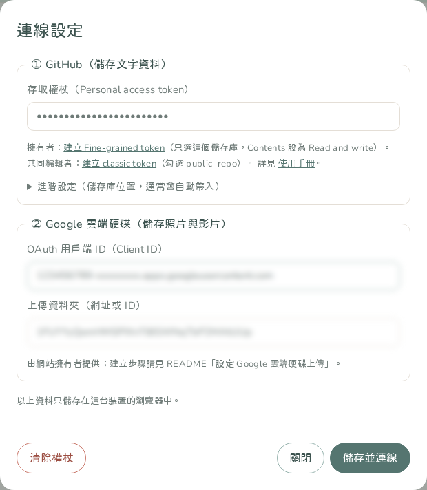
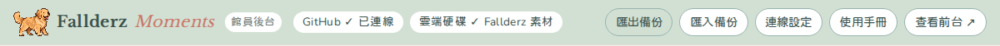
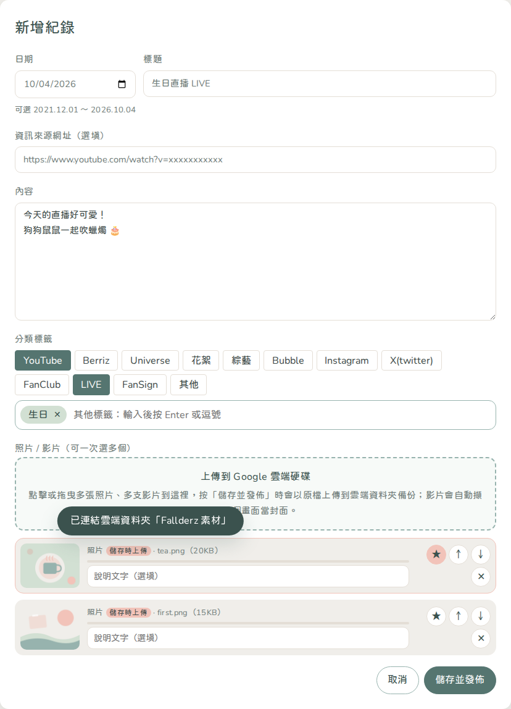
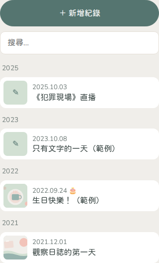
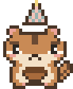
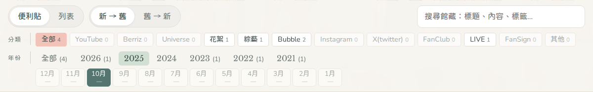

LIBRARIAN APPLICATION
Fallderz Moments
共同編輯者申請與使用手冊
想和 KONOKI 一起整理狗狗鼠鼠觀察日誌嗎？這份手冊會帶你從申請到上傳第一則紀錄。

CONTENTS目錄
CHAPTER 1共同編輯者可以做什麼
Fallderz Moments 由 KONOKI 建立與管理。通過申請後，你可以在館員後台：
- 新增、編輯、刪除紀錄（日期、標題、內容、分類、資訊來源）。
- 上傳照片與影片，或貼上 YouTube、X、Instagram 連結。
- 匯出與匯入備份。
網站背後的運作方式：
- 文字資料存在網站的 GitHub 儲存庫；照片與影片以原檔上傳到 KONOKI 的 Google 雲端硬碟共用資料夾。
- 按下「儲存並發佈」後，約 1～2 分鐘前台就會更新。
所以你會需要兩把「鑰匙」：
| 鑰匙 | 用途 | 怎麼取得 |
|---|---|---|
| GitHub 權杖 | 寫入文字資料 | KONOKI 邀請你成為協作者後，你自己建立（第 3 章） |
| Google 授權 | 上傳照片與影片 | KONOKI 把資料夾共用給你後，用自己的 Gmail 登入（第 3 章） |
CHAPTER 2申請流程
步驟 1 準備兩個帳號
- GitHub 帳號：沒有的話到 github.com/signup 免費註冊。使用者名稱會公開顯示在網站的修改紀錄上，建議使用暱稱。
- Gmail（Google 帳號）：用來上傳照片與影片。
步驟 2 向 KONOKI 提出申請
透過你平常聯絡 KONOKI 的方式（例如私訊）傳送以下資料：
你好，我想申請成為 Fallderz Moments 的共同編輯者。
・GitHub 使用者名稱：＿＿＿＿（不是 email）
・Gmail：＿＿＿＿@gmail.com
・想協助的內容：＿＿＿＿（例如整理直播、翻譯、補上舊紀錄）
請只透過私訊傳送，不要把 Gmail 公開貼在留言區。
步驟 3 等待審核
KONOKI 同意後，會替你開通三項權限，你會陸續收到通知：
- GitHub 的協作邀請信（寄到你 GitHub 帳號的信箱）
- Google 雲端硬碟的資料夾共用通知（權限為「編輯者」）
- 上傳功能的授權名單（不會另外收到通知）
KONOKI 也會私下提供本網站的 OAuth 用戶端 ID 與 上傳資料夾網址，請勿公開分享。收到邀請後，繼續第 3 章。
CHAPTER 3通過後：第一次設定 約 10 分鐘
建議用電腦完成第一次設定；之後用手機也能上傳。
步驟 1 接受 GitHub 邀請
- 打開 GitHub 寄來的邀請信，或直接前往 網站儲存庫的邀請頁面。
- 按 Accept invitation。邀請 7 天內有效，過期請請 KONOKI 重新邀請。
步驟 2 建立你自己的 GitHub 權杖
- 開啟 建立 classic token（連結已預先勾選好權限）。
- Note：
Fallderz Moments。 - Expiration：建議選 90 days，到期再建立新的。
- Select scopes：確認只勾選 public_repo。
- 拉到最下面按 Generate token，複製以
ghp_開頭的權杖。
步驟 3 確認雲端資料夾已共用給你
打開 Google 雲端硬碟 →「與我共用」，應該能看到 KONOKI 共用的資料夾，而且你的權限是「編輯者」。
步驟 4 填寫後台的連線設定
- 開啟 館員後台，會自動跳出「連線設定」（之後可按右上角「連線設定」再打開）。
- 存取權杖：貼上步驟 2 的權杖。
- 進階設定（儲存庫位置）會依網站網址自動帶入，不用填寫。
- OAuth 用戶端 ID：填 KONOKI 提供的那一組（已自動帶入就不用改）。
- 上傳資料夾：貼上 KONOKI 私下提供的資料夾網址（只會存在你的瀏覽器中）。
- 按「儲存並連線」，出現「GitHub 連線成功」就完成了。

步驟 5 連結 Google 雲端硬碟
- 按後台上方的「連結 Google 雲端硬碟」。
- 選擇你提供給 KONOKI 的那個 Gmail。
- 看到「Google 尚未驗證這個應用程式」時，按「繼續」（這是 KONOKI 為本網站建立的私人應用程式）。
- 在權限畫面勾選「查看、編輯、建立及刪除您所有的 Google 雲端硬碟檔案」→ 繼續。沒有勾選的話上傳會失敗。網站只會把檔案放進共用資料夾，不會讀取你其他的檔案。
- 上方出現兩個 ✓ 就代表一切就緒：

CHAPTER 4新增一則紀錄
按左上角「＋ 新增紀錄」，依序填寫：

| 欄位 | 說明 |
|---|---|
| 日期（必填） | 可選 2021/12/01 到今天；過了午夜就能選隔天。日期是 9/1 或 9/24 時會顯示 🎂 提示。 |
| 標題 | 這一天的小標題，最多 80 字。 |
| 資訊來源網址（選填） | 原始貼文、文章、直播頁面的網址，前台會顯示在內容最下方。 |
| 內容 | 可換行；文字裡的網址會自動變成連結。 |
| 分類標籤 | 點選預設分類（可複選）；其他標籤在下方輸入後按 Enter 或逗號。 |
| 照片／影片 | 點擊或拖曳檔案到虛線框，可一次選多張照片、多支影片。檔案會在按「儲存並發佈」時才上傳。 |
| 加入連結 | 貼上 YouTube、X、Instagram 或雲端硬碟連結，前台會直接嵌入顯示。 |
整理媒體
- ★：設為便利貼的代表縮圖。
- ↑ ↓：調整顯示順序。
- ✕：移除（尚未儲存前移除不會上傳）。
- 說明文字：顯示在照片下方，可留空。
儲存
- 按右下角「儲存並發佈」。
- 畫面下方會顯示上傳進度（例如「上傳中 1/3：IMG_0001.jpg 45%」），大型影片需要一些時間，上傳完成前請不要關閉頁面。
- 出現「已儲存！前台約 1 分鐘後更新」即完成。
CHAPTER 5編輯與刪除

- 編輯：在左側清單點選紀錄（可用搜尋框找），修改後按「儲存並發佈」。
- 刪除：打開紀錄後按左下角「刪除這則」並確認。刪除別人建立的紀錄前，請先和 KONOKI 確認。
- 刪除紀錄或移除媒體時，雲端硬碟裡的原始檔案會保留，不會被刪除。
- 多人同時編輯不同紀錄不會互相覆蓋；但請避免兩個人同時編輯同一則，以後存檔的版本為準。
- 匯出備份：下載全部文字資料（JSON 檔）。匯入備份會取代目前所有資料，請先和 KONOKI 確認再使用。
CHAPTER 6分類、生日與日期規則
預設分類
YouTube Berriz Universe 花絮 綜藝 Bubble Instagram X(twitter) FanClub LIVE FanSign 其他
請優先使用預設分類，前台才能正確篩選；自訂標籤請保持一致的寫法（例如都用「生日」，不要混用「生日快樂」）。
生日紀錄
日期為 9 月 1 日或 9 月 24 日的紀錄，前台會自動加上彩帶、蛋糕和戴派對帽的狗狗鼠鼠，不需要另外設定。


日期
時間軸從 2021 年 12 月 1 日開始，以台北時間為準，每天午夜自動延伸到新的一天。
CHAPTER 7前台瀏覽方式

- 預設：打開網站時顯示「本月」的紀錄。
- 選年份：只顯示該年的紀錄；再選月份：只顯示該年該月。再按一次已選的月份會回到整年。
- 全部：顯示所有紀錄。
- 分類：只顯示該分類，可和年份、月份一起使用。
- 搜尋：搜尋全部時間的標題、內容與標籤。
- 便利貼／列表：切換兩種瀏覽方式；新→舊／舊→新：切換排序。
- 點開紀錄後可用 ← → 切換上下則；網址可以直接分享給別人。
CHAPTER 8編輯守則與安全
編輯守則
- 盡量附上資訊來源網址，方便大家查證。
- 網站與上傳的照片影片是公開的，請勿上傳私密、未公開或不適合公開的內容。
- 大幅修改或刪除既有紀錄前，先和 KONOKI 討論。
帳號安全
- 只使用你自己的權杖，不要共用、不要傳給任何人。
- 在公用或別人的電腦上使用後，請到「連線設定」按「清除權杖」。
- 懷疑權杖外流時，立即到 GitHub → Settings → Tokens 刪除，再建立新的，並告知 KONOKI。
- 每次存檔都會以你的 GitHub 使用者名稱公開留下紀錄（不會顯示 email）。
- 你上傳到資料夾的檔案，擁有者是你自己，佔用的是你的雲端硬碟空間。
CHAPTER 9常見問題與錯誤訊息
| 看到的訊息 | 原因與解決方式 |
|---|---|
| 權杖無效或已過期 | 權杖輸入錯誤或已到期，請重新建立權杖（第 3 章步驟 2）並貼上。 |
| 找不到儲存庫，或權杖沒有存取權 | ① 尚未接受協作邀請 ② 權杖沒有勾選 public_repo ③ 權杖是用其他 GitHub 帳號建立的。 |
| 這個權杖沒有寫入權限 | 尚未接受邀請，或權杖權限不足。請確認已按下 Accept invitation。 |
| 找不到分支 | 打開「連線設定 → 進階設定」，分支請填 main。 |
| access_denied／存取遭拒 | 你的 Gmail 還沒被加入授權名單，請聯絡 KONOKI。 |
| origin_mismatch／redirect_uri_mismatch | 網站的 Google 設定需要更新，請截圖通知 KONOKI。 |
| 找不到上傳資料夾 | 登入的 Google 帳號沒有資料夾權限。請確認用的是你提供給 KONOKI 的 Gmail。 |
| 沒有權限把檔案放進資料夾 | 你的資料夾權限是「檢視者」，請 KONOKI 改成「編輯者」。 |
| 雲端硬碟權限不足 | 連結 Google 時沒有勾選雲端硬碟權限。再按一次「連結 Google 雲端硬碟」，在權限畫面勾選後繼續。 |
| 已取消 Google 授權 | 授權視窗被關掉了，再按一次「儲存並發佈」或「連結 Google 雲端硬碟」。若視窗沒跳出，請允許瀏覽器的彈出式視窗。 |
| 前台沒有更新 | 等 1～2 分鐘，再按 Ctrl+Shift+R（Mac：Cmd+Shift+R）重新整理；手機請關掉分頁重開。 |
| 照片顯示不出來 | 剛上傳的檔案需要幾分鐘處理；若是手動貼的雲端連結，請把共用設定改成「知道連結的任何人」。 |
| 日期選不到明天 | 只能選到今天（台北時間），午夜後就能選新的一天。 |
其他問題請截圖後聯絡 KONOKI。
CHAPTER 10停止擔任共同編輯者
- 告訴 KONOKI，KONOKI 會移除你的 GitHub 協作權限與資料夾共用。
- 到 GitHub → Settings → Tokens 刪除為本網站建立的權杖。
- 在使用過的每台裝置開啟後台 →「連線設定」→「清除權杖」。
- （可選）到 Google 帳戶 → 第三方連結 移除本網站的存取權。
你已經新增的紀錄會保留在網站上；你上傳的檔案仍在你自己的雲端硬碟中，如需刪除請先和 KONOKI 討論，以免前台的照片或影片無法顯示。